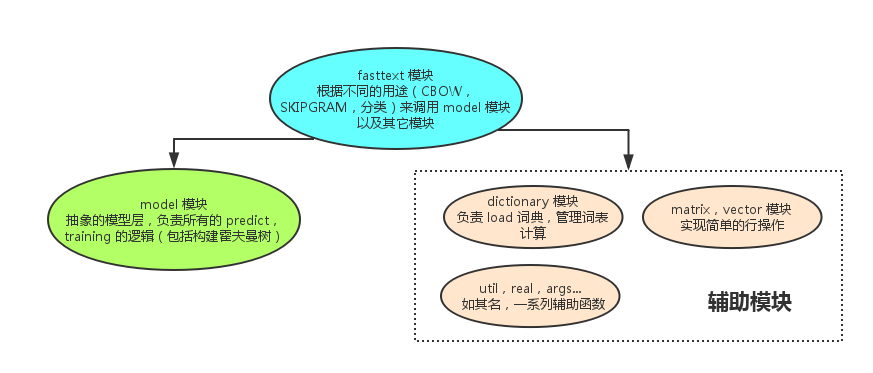
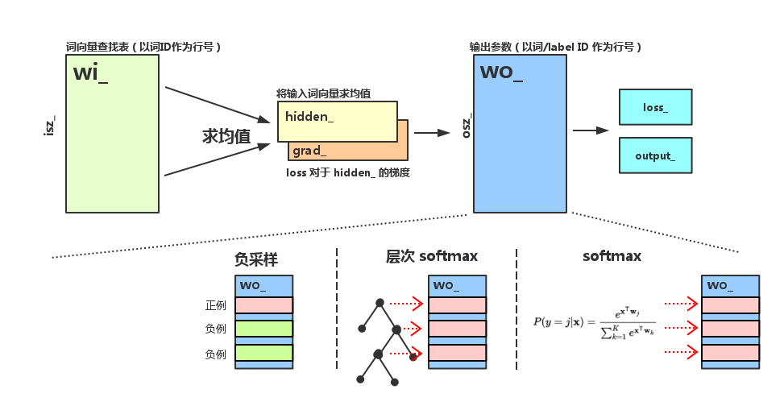

fastText 源码分析
介绍
fastText 是 facebook 近期开源的一个词向量计算以及文本分类工具，该工具的理论基础是以下两篇论文：
这篇论文提出了用 word n-gram 的向量之和来代替简单的词向量的方法，以解决简单 word2vec 无法处理同一词的不同形态的问题。fastText 中提供了 maxn 这个参数来确定 word n-gram 的 n 的大小。
这篇论文提出了 fastText 算法，该算法实际上是将目前用来算 word2vec 的网络架构做了个小修改，原先使用一个词的上下文的所有词向量之和来预测词本身（CBOW 模型），现在改为用一段短文本的 词向量之和来对文本进行分类。
在我看来，fastText 的价值是提供了一个 更具可读性，模块化程度较好 的 word2vec 的实现，附带一些新的分类功能，本文详细分析它的源码。
顶层结构
fastText 的代码结构以及各模块的功能如下图所示：

分析各模块时，我只会解释该模块的 主要调用路径 下的源码，以 注释 的方式说明，其它的功能性代码请大家自行阅读。如果对 word2vec 的理论和相关术语不了解，请先阅读这篇 word2vec 中的数学原理详解。
训练数据格式
训练数据格式为一行一个句子，每个词用空格分割，如果一个词带有前缀“__label__”，那么它就作为一个类标签，在文本分类时使用，这个前缀可以通过-label参数自定义。训练文件支持 UTF-8 格式。
word n-gram
fasttext 模块
fasttext 是最顶层的模块，它的主要功能是训练和预测，首先是训练功能的调用路径，第一个函数是 train，它的主要作用是 初始化参数，启动多线程训练，请大家留意源码中的相关部分。
void FastText::train(std::shared_ptr<Args> args) {
args_ = args;
dict_ = std::make_shared<Dictionary>(args_);
std::ifstream ifs(args_->input);
if (!ifs.is_open()) {
std::cerr << "Input file cannot be opened!" << std::endl;
exit(EXIT_FAILURE);
}
// 根据输入文件初始化词典
dict_->readFromFile(ifs);
ifs.close();
// 初始化输入层, 对于普通 word2vec，输入层就是一个词向量的查找表，
// 所以它的大小为 nwords 行，dim 列（dim 为词向量的长度），但是 fastText 用了
// word n-gram 作为输入，所以输入矩阵的大小为 (nwords + ngram 种类) * dim
// 代码中，所有 word n-gram 都被 hash 到固定数目的 bucket 中，所以输入矩阵的大小为
// (nwords + bucket 个数) * dim
input_ = std::make_shared<Matrix>(dict_->nwords()+args_->bucket, args_->dim);
// 初始化输出层，输出层无论是用负采样，层次 softmax，还是普通 softmax，
// 对于每种可能的输出，都有一个 dim 维的参数向量与之对应
// 当 args_->model == model_name::sup 时，训练分类器，
// 所以输出的种类是标签总数 dict_->nlabels()
if (args_->model == model_name::sup) {
output_ = std::make_shared<Matrix>(dict_->nlabels(), args_->dim);
} else {
// 否则训练的是词向量，输出种类就是词的种类 dict_->nwords()
output_ = std::make_shared<Matrix>(dict_->nwords(), args_->dim);
}
input_->uniform(1.0 / args_->dim);
output_->zero();
start = clock();
tokenCount = 0;
// 库采用 C++ 标准库的 thread 来实现多线程
std::vector<std::thread> threads;
for (int32_t i = 0; i < args_->thread; i++) {
// 实际的训练发生在 trainThread 中
threads.push_back(std::thread([=]() { trainThread(i); }));
}
for (auto it = threads.begin(); it != threads.end(); ++it) {
it->join();
}
// Model 的所有参数（input_, output_）是在初始化时由外界提供的，
// 此时 input_ 和 output_ 已经处于训练结束的状态
model_ = std::make_shared<Model>(input_, output_, args_, 0);
saveModel();
if (args_->model != model_name::sup) {
saveVectors();
}
}
下面，我们进入 trainThread函数，看看训练的主体逻辑，该函数的主要工作是 实现了标准的随机梯度下降，并随着训练的进行逐步降低学习率。
void FastText::trainThread(int32_t threadId) {
std::ifstream ifs(args_->input);
// 根据线程数，将训练文件按照总字节数（utils::size）均分成多个部分
// 这么做的一个后果是，每一部分的第一个词有可能从中间被切断，
// 这样的"小噪音"对于整体的训练结果无影响
utils::seek(ifs, threadId * utils::size(ifs) / args_->thread);
Model model(input_, output_, args_, threadId);
if (args_->model == model_name::sup) {
model.setTargetCounts(dict_->getCounts(entry_type::label));
} else {
model.setTargetCounts(dict_->getCounts(entry_type::word));
}
// 训练文件中的 token 总数
const int64_t ntokens = dict_->ntokens();
// 当前线程处理完毕的 token 总数
int64_t localTokenCount = 0;
std::vector<int32_t> line, labels;
// tokenCount 为所有线程处理完毕的 token 总数
// 当处理了 args_->epoch 遍所有 token 后，训练结束
while (tokenCount < args_->epoch * ntokens) {
// progress = 0 ~ 1，代表当前训练进程，随着训练的进行逐渐增大
real progress = real(tokenCount) / (args_->epoch * ntokens);
// 学习率根据 progress 线性下降
real lr = args_->lr * (1.0 - progress);
localTokenCount += dict_->getLine(ifs, line, labels, model.rng);
// 根据训练需求的不同，这里用的更新策略也不同，它们分别是：
// 1. 有监督学习（分类）
if (args_->model == model_name::sup) {
dict_->addNgrams(line, args_->wordNgrams);
supervised(model, lr, line, labels);
// 2. word2vec (CBOW)
} else if (args_->model == model_name::cbow) {
cbow(model, lr, line);
// 3. word2vec (SKIPGRAM)
} else if (args_->model == model_name::sg) {
skipgram(model, lr, line);
}
// args_->lrUpdateRate 是每个线程学习率的变化率，默认为 100，
// 它的作用是，每处理一定的行数，再更新全局的 tokenCount 变量，从而影响学习率
if (localTokenCount > args_->lrUpdateRate) {
tokenCount += localTokenCount;
// 每次更新 tokenCount 后，重置计数
localTokenCount = 0;
// 0 号线程负责将训练进度输出到屏幕
if (threadId == 0) {
printInfo(progress, model.getLoss());
}
}
}
if (threadId == 0) {
printInfo(1.0, model.getLoss());
std::cout << std::endl;
}
ifs.close();
}
一哄而上的并行训练：每个训练线程在更新参数时并没有加锁，这会给参数更新带来一些噪音，但是不会影响最终的结果。无论是 google 的 word2vec 实现，还是 fastText 库，都没有加锁。
从 trainThread 函数中我们发现，实际的模型更新策略发生在 supervised,cbow,skipgram三个函数中，这三个函数都调用同一个 model.update 函数来更新参数，这个函数属于 model 模块，但在这里我先简单介绍它，以方便大家理解代码。
update 函数的原型为
void Model::update(const std::vector<int32_t>& input, int32_t target, real lr)
该函数有三个参数，分别是“输入”，“类标签”，“学习率”。
- 输入是一个
int32_t数组，每个元素代表一个词在 dictionary 里的 ID。对于分类问题，这个数组代表输入的短文本，对于 word2vec，这个数组代表一个词的上下文。 - 类标签是一个
int32_t变量。对于 word2vec 来说，它就是带预测的词的 ID，对于分类问题，它就是类的 label 在 dictionary 里的 ID。因为 label 和词在词表里一起存放，所以有统一的 ID 体系。
下面，我们回到 fasttext 模块的三个更新函数：
void FastText::supervised(Model& model, real lr,
const std::vector<int32_t>& line,
const std::vector<int32_t>& labels) {
if (labels.size() == 0 || line.size() == 0) return;
// 因为一个句子可以打上多个 label，但是 fastText 的架构实际上只有支持一个 label
// 所以这里随机选择一个 label 来更新模型，这样做会让其它 label 被忽略
// 所以 fastText 不太适合做多标签的分类
std::uniform_int_distribution<> uniform(0, labels.size() - 1);
int32_t i = uniform(model.rng);
model.update(line, labels[i], lr);
}
void FastText::cbow(Model& model, real lr,
const std::vector<int32_t>& line) {
std::vector<int32_t> bow;
std::uniform_int_distribution<> uniform(1, args_->ws);
// 在一个句子中，每个词可以进行一次 update
for (int32_t w = 0; w < line.size(); w++) {
// 一个词的上下文长度是随机产生的
int32_t boundary = uniform(model.rng);
bow.clear();
// 以当前词为中心，将左右 boundary 个词加入 input
for (int32_t c = -boundary; c <= boundary; c++) {
// 当然，不能数组越界
if (c != 0 && w + c >= 0 && w + c < line.size()) {
// 实际被加入 input 的不止是词本身，还有词的 word n-gram
const std::vector<int32_t>& ngrams = dict_->getNgrams(line[w + c]);
bow.insert(bow.end(), ngrams.cbegin(), ngrams.cend());
}
}
// 完成一次 CBOW 更新
model.update(bow, line[w], lr);
}
}
void FastText::skipgram(Model& model, real lr,
const std::vector<int32_t>& line) {
std::uniform_int_distribution<> uniform(1, args_->ws);
for (int32_t w = 0; w < line.size(); w++) {
// 一个词的上下文长度是随机产生的
int32_t boundary = uniform(model.rng);
// 采用词+word n-gram 来预测这个词的上下文的所有的词
const std::vector<int32_t>& ngrams = dict_->getNgrams(line[w]);
// 在 skipgram 中，对上下文的每一个词分别更新一次模型
for (int32_t c = -boundary; c <= boundary; c++) {
if (c != 0 && w + c >= 0 && w + c < line.size()) {
model.update(ngrams, line[w + c], lr);
}
}
}
}
训练部分的代码已经分析完毕，预测部分的代码就简单多了，它的主要逻辑都在 model.predict 函数里。
void FastText::predict(const std::string& filename, int32_t k, bool print_prob) {
std::vector<int32_t> line, labels;
std::ifstream ifs(filename);
if (!ifs.is_open()) {
std::cerr << "Test file cannot be opened!" << std::endl;
exit(EXIT_FAILURE);
}
while (ifs.peek() != EOF) {
// 读取输入文件的每一行
dict_->getLine(ifs, line, labels, model_->rng);
// 将一个词的 n-gram 加入词表，用于处理未登录词。（即便一个词不在词表里，我们也可以用它的 word n-gram 来预测一个结果）
dict_->addNgrams(line, args_->wordNgrams);
if (line.empty()) {
std::cout << "n/a" << std::endl;
continue;
}
std::vector<std::pair<real, int32_t>> predictions;
// 调用 model 模块的预测接口，获取 k 个最可能的分类
model_->predict(line, k, predictions);
// 输出结果
for (auto it = predictions.cbegin(); it != predictions.cend(); it++) {
if (it != predictions.cbegin()) {
std::cout << ' ';
}
std::cout << dict_->getLabel(it->second);
if (print_prob) {
std::cout << ' ' << exp(it->first);
}
}
std::cout << std::endl;
}
ifs.close();
}
通过对 fasttext 模块的分析，我们发现它最核心的预测和更新逻辑都在 model 模块中，接下来，我们进入 model 模块一探究竟。
model 模块
model 模块对外提供的服务可以分为 update 和 predict 两类，下面我们分别对它们进行分析。由于这里的参数较多，我们先以图示标明各个参数在模型中所处的位置，以免各位混淆。

图中所有变量的名字全部与 model 模块中的名字保持一致，注意到 wo_ 矩阵在不同的输出层结构中扮演着不同的角色。
update
update 函数的作用已经在前面介绍过，下面我们看一下它的实现：
void Model::update(const std::vector<int32_t>& input, int32_t target, real lr) {
// target 必须在合法范围内
assert(target >= 0);
assert(target < osz_);
if (input.size() == 0) return;
// 计算前向传播：输入层 -> 隐层
hidden_.zero();
for (auto it = input.cbegin(); it != input.cend(); ++it) {
// hidden_ 向量保存输入词向量的均值，
// addRow 的作用是将 wi_ 矩阵的第 *it 列加到 hidden_ 上
hidden_.addRow(*wi_, *it);
}
// 求和后除以输入词个数，得到均值向量
hidden_.mul(1.0 / input.size());
// 根据输出层的不同结构，调用不同的函数，在各个函数中，
// 不仅通过前向传播算出了 loss_，还进行了反向传播，计算出了 grad_，后面逐一分析。
// 1. 负采样
if (args_->loss == loss_name::ns) {
loss_ += negativeSampling(target, lr);
} else if (args_->loss == loss_name::hs) {
// 2. 层次 softmax
loss_ += hierarchicalSoftmax(target, lr);
} else {
// 3. 普通 softmax
loss_ += softmax(target, lr);
}
nexamples_ += 1;
// 如果是在训练分类器，就将 grad_ 除以 input_ 的大小
// 原因不明
if (args_->model == model_name::sup) {
grad_.mul(1.0 / input.size());
}
// 反向传播，将 hidden_ 上的梯度传播到 wi_ 上的对应行
for (auto it = input.cbegin(); it != input.cend(); ++it) {
wi_->addRow(grad_, *it, 1.0);
}
}
下面我们看看三种输出层对应的更新函数：negativeSampling,hierarchicalSoftmax,softmax。
model 模块中最有意思的部分就是将层次 softmax 和负采样统一抽象成多个二元 logistic regression 计算。
如果使用负采样，训练时每次选择一个正样本，随机采样几个负样本，每种输出都对应一个参数向量，保存于 wo_ 的各行。对所有样本的参数更新，都是一次独立的 LR 参数更新。
如果使用层次 softmax，对于每个目标词，都可以在构建好的霍夫曼树上确定一条从根节点到叶节点的路径，路径上的每个非叶节点都是一个 LR，参数保存在 wo_ 的各行上，训练时，这条路径上的 LR 各自独立进行参数更新。
无论是负采样还是层次 softmax，在神经网络的计算图中，所有 LR 都会依赖于 hidden_的值，所以 hidden_ 的梯度 grad_ 是各个 LR 的反向传播的梯度的累加。
LR 的代码如下：
real Model::binaryLogistic(int32_t target, bool label, real lr) {
// 将 hidden_ 和参数矩阵的第 target 行做内积，并计算 sigmoid
real score = utils::sigmoid(wo_->dotRow(hidden_, target));
// 计算梯度时的中间变量
real alpha = lr * (real(label) - score);
// Loss 对于 hidden_ 的梯度累加到 grad_ 上
grad_.addRow(*wo_, target, alpha);
// Loss 对于 LR 参数的梯度累加到 wo_ 的对应行上
wo_->addRow(hidden_, target, alpha);
// LR 的 Loss
if (label) {
return -utils::log(score);
} else {
return -utils::log(1.0 - score);
}
}
经过以上的分析，下面三种逻辑就比较容易理解了：
real Model::negativeSampling(int32_t target, real lr) {
real loss = 0.0;
grad_.zero();
for (int32_t n = 0; n <= args_->neg; n++) {
// 对于正样本和负样本，分别更新 LR
if (n == 0) {
loss += binaryLogistic(target, true, lr);
} else {
loss += binaryLogistic(getNegative(target), false, lr);
}
}
return loss;
}
real Model::hierarchicalSoftmax(int32_t target, real lr) {
real loss = 0.0;
grad_.zero();
// 先确定霍夫曼树上的路径
const std::vector<bool>& binaryCode = codes[target];
const std::vector<int32_t>& pathToRoot = paths[target];
// 分别对路径上的中间节点做 LR
for (int32_t i = 0; i < pathToRoot.size(); i++) {
loss += binaryLogistic(pathToRoot[i], binaryCode[i], lr);
}
return loss;
}
// 普通 softmax 的参数更新
real Model::softmax(int32_t target, real lr) {
grad_.zero();
computeOutputSoftmax();
for (int32_t i = 0; i < osz_; i++) {
real label = (i == target) ? 1.0 : 0.0;
real alpha = lr * (label - output_[i]);
grad_.addRow(*wo_, i, alpha);
wo_->addRow(hidden_, i, alpha);
}
return -utils::log(output_[target]);
}
predict
predict 函数可以用于给输入数据打上 1 ～ K 个类标签，并输出各个类标签对应的概率值，对于层次 softmax，我们需要遍历霍夫曼树，找到 top－K 的结果，对于普通 softmax（包括负采样和 softmax 的输出），我们需要遍历结果数组，找到 top－K。
void Model::predict(const std::vector<int32_t>& input, int32_t k, std::vector<std::pair<real, int32_t>>& heap) {
assert(k > 0);
heap.reserve(k + 1);
// 计算 hidden_
computeHidden(input);
// 如果是层次 softmax，使用 dfs 遍历霍夫曼树的所有叶子节点，找到 top－k 的概率
if (args_->loss == loss_name::hs) {
dfs(k, 2 * osz_ - 2, 0.0, heap);
} else {
// 如果是普通 softmax，在结果数组里找到 top-k
findKBest(k, heap);
}
// 对结果进行排序后输出
// 因为 heap 中虽然一定是 top-k，但并没有排好序
std::sort_heap(heap.begin(), heap.end(), comparePairs);
}
void Model::findKBest(int32_t k, std::vector<std::pair<real, int32_t>>& heap) {
// 计算结果数组
computeOutputSoftmax();
for (int32_t i = 0; i < osz_; i++) {
if (heap.size() == k && utils::log(output_[i]) < heap.front().first) {
continue;
}
// 使用一个堆来保存 top－k 的结果，这是算 top-k 的标准做法
heap.push_back(std::make_pair(utils::log(output_[i]), i));
std::push_heap(heap.begin(), heap.end(), comparePairs);
if (heap.size() > k) {
std::pop_heap(heap.begin(), heap.end(), comparePairs);
heap.pop_back();
}
}
}
void Model::dfs(int32_t k, int32_t node, real score, std::vector<std::pair<real, int32_t>>& heap) {
if (heap.size() == k && score < heap.front().first) {
return;
}
if (tree[node].left == -1 && tree[node].right == -1) {
// 只输出叶子节点的结果
heap.push_back(std::make_pair(score, node));
std::push_heap(heap.begin(), heap.end(), comparePairs);
if (heap.size() > k) {
std::pop_heap(heap.begin(), heap.end(), comparePairs);
heap.pop_back();
}
return;
}
// 将 score 累加后递归向下收集结果
real f = utils::sigmoid(wo_->dotRow(hidden_, node - osz_));
dfs(k, tree[node].left, score + utils::log(1.0 - f), heap);
dfs(k, tree[node].right, score + utils::log(f), heap);
}
其它模块
除了以上两个模块，dictionary 模块也相当重要，它完成了训练文件载入，哈希表构建，word n-gram 计算等功能，但是并没有太多算法在里面。
其它模块例如 Matrix, Vector 也只是封装了简单的矩阵向量操作，这里不再做详细分析。
附录：构建霍夫曼树算法分析
在学信息论的时候接触过构建 Huffman 树的算法，课本中的方法描述往往是：
找到当前权重最小的两个子树，将它们合并
算法的性能取决于如何实现这个逻辑。网上的很多实现都是在新增节点都时遍历一次当前所有的树，这种算法的复杂度是 \(O(n^2)\)，非常愚蠢。
聪明一点的方法是用一个优先级队列来保存当前所有的树，每次取 top 2，合并，加回队列。这个算法的复杂度是 \(O(nlogn)\)，缺点是必需使用额外的数据结构，而且进堆出堆的操作导致常数项较大。
word2vec 以及 fastText 都采用了一种更好的方法，时间复杂度是 \(O(nlogn)\)，只用了一次排序，一次遍历，简洁优美，但是要理解它需要进行一些推理。
算法如下：
void Model::buildTree(const std::vector<int64_t>& counts) {
// counts 数组保存每个叶子节点的词频，降序排列
// 分配所有节点的空间
tree.resize(2 * osz_ - 1);
// 初始化节点属性
for (int32_t i = 0; i < 2 * osz_ - 1; i++) {
tree[i].parent = -1;
tree[i].left = -1;
tree[i].right = -1;
tree[i].count = 1e15;
tree[i].binary = false;
}
for (int32_t i = 0; i < osz_; i++) {
tree[i].count = counts[i];
}
// leaf 指向当前未处理的叶子节点的最后一个，也就是权值最小的叶子节点
int32_t leaf = osz_ - 1;
// node 指向当前未处理的非叶子节点的第一个，也是权值最小的非叶子节点
int32_t node = osz_;
// 逐个构造所有非叶子节点（i >= osz_, i < 2 * osz - 1)
for (int32_t i = osz_; i < 2 * osz_ - 1; i++) {
// 最小的两个节点的下标
int32_t mini[2];
// 计算权值最小的两个节点，候选只可能是 leaf, leaf - 1,
// 以及 node, node + 1
for (int32_t j = 0; j < 2; j++) {
// 从这四个候选里找到 top-2
if (leaf >= 0 && tree[leaf].count < tree[node].count) {
mini[j] = leaf--;
} else {
mini[j] = node++;
}
}
// 更新非叶子节点的属性
tree[i].left = mini[0];
tree[i].right = mini[1];
tree[i].count = tree[mini[0]].count + tree[mini[1]].count;
tree[mini[0]].parent = i;
tree[mini[1]].parent = i;
tree[mini[1]].binary = true;
}
// 计算霍夫曼编码
for (int32_t i = 0; i < osz_; i++) {
std::vector<int32_t> path;
std::vector<bool> code;
int32_t j = i;
while (tree[j].parent != -1) {
path.push_back(tree[j].parent - osz_);
code.push_back(tree[j].binary);
j = tree[j].parent;
}
paths.push_back(path);
codes.push_back(code);
}
}
算法首先对输入的叶子节点进行一次排序（\(O(nlogn)\) ），然后确定两个下标 leaf 和 node，leaf 总是指向当前最小的叶子节点，node 总是指向当前最小的非叶子节点，所以，最小的两个节点可以从 leaf, leaf - 1, node, node + 1 四个位置中取得，时间复杂度 \(O(1)\)，每个非叶子节点都进行一次，所以总复杂度为 \(O(n)\)，算法整体复杂度为 \(O(nlogn)\)。